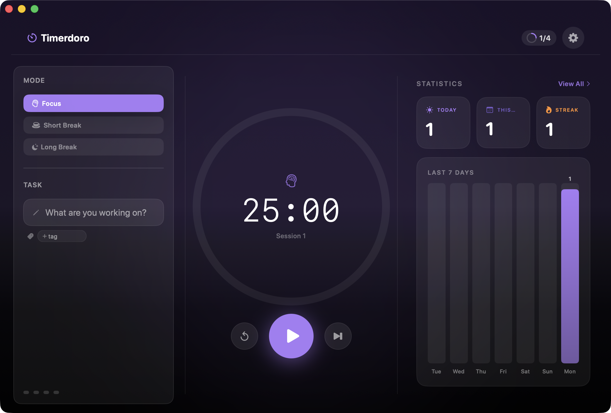
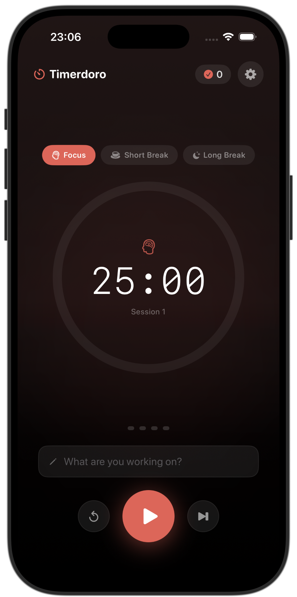
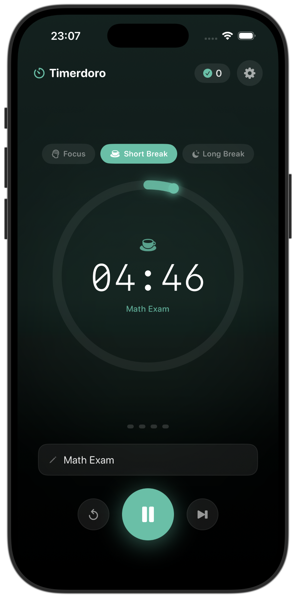
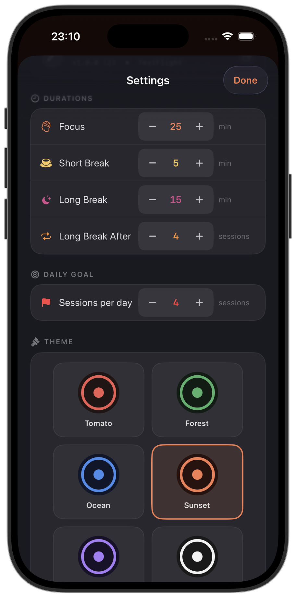
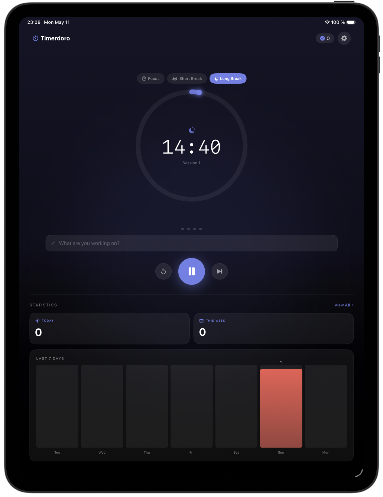
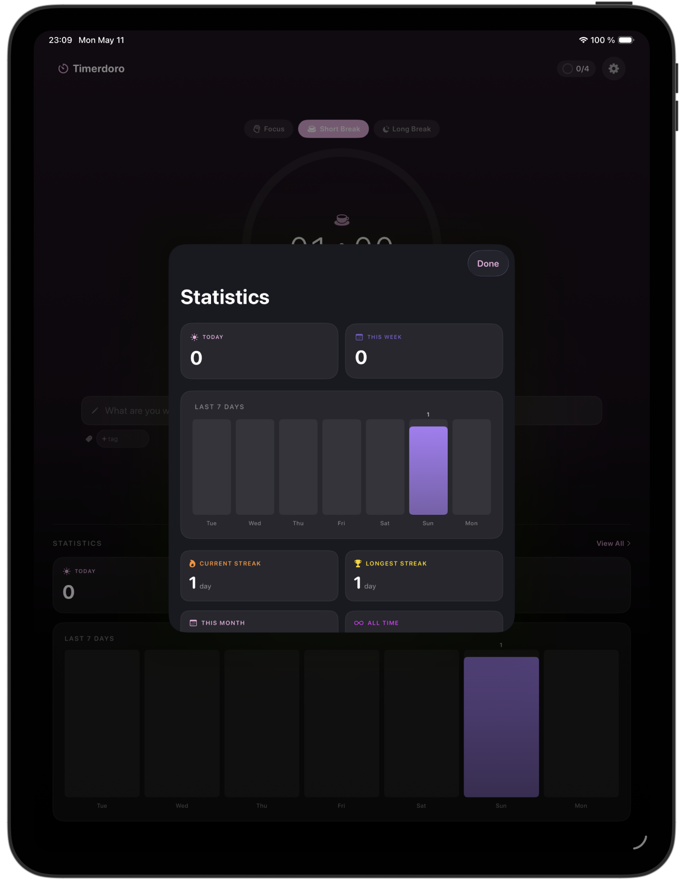
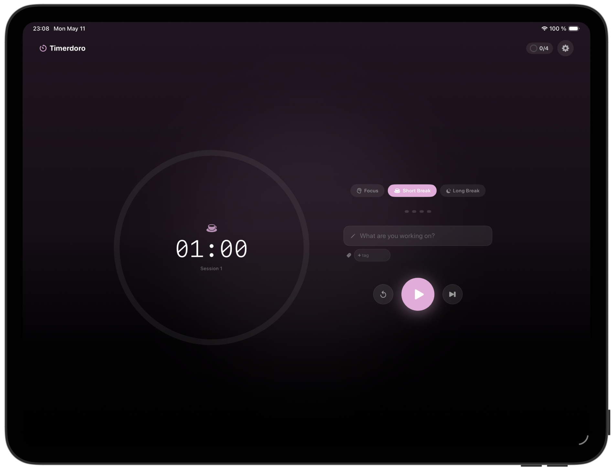
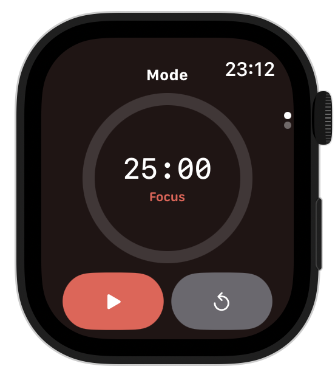

Focus, simplified.
Beautifully.
A Pomodoro timer for iPhone, iPad, and Mac that respects your time and your privacy. No subscription. No tracking. Just focus.

What you get from day one
Designed for actual focus.
Most Pomodoro apps are either too complex (full task systems) or too basic (just a countdown). Timerdoro is the focused middle.
The short version: what matters most, without the productivity theatre.
Pure & focused
Intervals without noise.
One job: help you focus. No bloat, no nags, no streaks-or-die. Just clean intervals and gentle feedback.
Beautifully native
SwiftUI on every screen size.
Built with SwiftUI from day one. Adaptive layouts on iPhone, iPad, and Mac. Feels right at home everywhere.
Privacy first
Nothing leaves your device.
Zero data collection. No analytics. No third parties. Everything stays on your device, period.
Pay once, own it
Pro for €3.99, forever.
One-time purchase. No subscription games. Buy Pro for €3.99 and keep it forever, across all your devices.
Smart end-early
Finish early after 80%—still counts.
Done with your task before the timer finishes? After 80% of the focus time, end early and still get credit.
Stats that matter
Goals, streaks, export anytime.
Heatmap, streaks, daily goals. Track progress without spreadsheet anxiety. Your data is yours to export anytime.
iPhone. iPad. Mac.
Native on each platform. Layouts that respect your screen. Apple Watch & Menu Bar coming in v1.1.
Real pixels from the app—same typography, spacing, and themes you get in TestFlight.







Honest, simple, fair.
No subscriptions. No tiers. Just two options.
Free is genuinely useful; Pro adds depth when you want themes, goals, and exports.
Full timer, modes, and core stats—no trial limits.
- Full Pomodoro timer
- 3 modes (Focus, Short, Long)
- Custom intervals up to 90 min
- Notifications & sound
- Today & week stats
- iPhone, iPad, Mac native
Themes, sounds, goals, tags, heatmap, history, and export.
- Everything in Free
- 6 beautiful themes
- 7 completion sounds
- Custom intervals up to 180 min
- Daily goal tracking
- Tags, heatmap, streaks
- Detailed history & CSV export
- Custom app icons
Family Sharing supported · No recurring charges · No hidden fees
Ready to focus?
Join the beta for TestFlight access. We’ll email you when the App Store version ships—no list selling, ever.